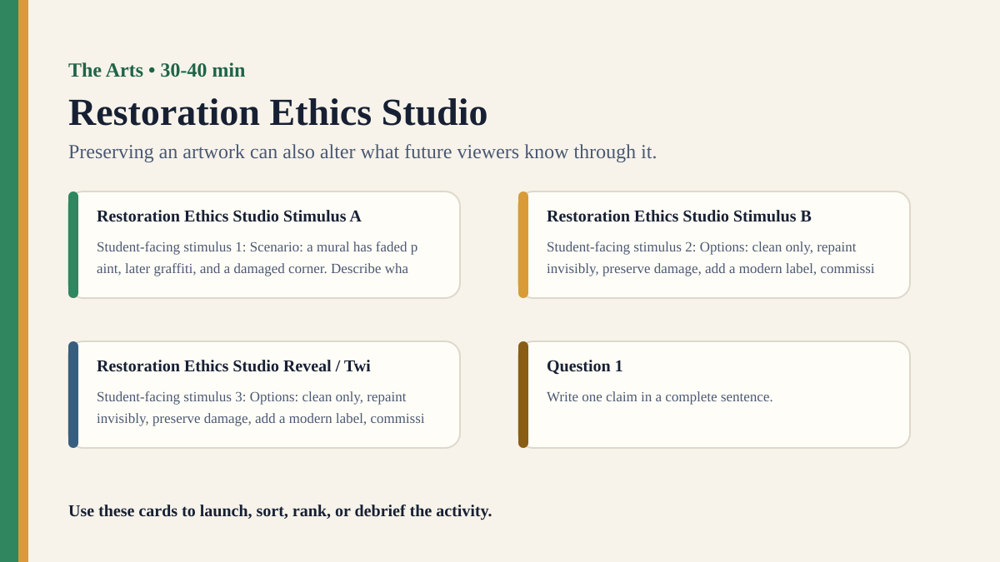

Premium draft resource
Restoration Ethics Studio Classroom Run Kit
Students decide how to restore a damaged artwork and analyze how restoration choices affect authenticity and knowledge.
Back to Restoration Ethics Studio
One-Minute Teacher Brief
Students decide how to restore a damaged artwork and analyze how restoration choices affect authenticity and knowledge.
Big idea: Preserving an artwork can also alter what future viewers know through it.
Student Prompt
Inspect Restoration Ethics Studio Stimulus A. Record one first claim, the evidence you used, your confidence, and what would make you revise.
Concrete Stimulus Packet
Stimulus
Restoration Ethics Studio Stimulus A
Student-facing stimulus 1: Scenario: a mural has faded paint, later graffiti, and a damaged corner. Describe what you see or hear first, then add title/context and revise the interpretation.
Students inspect this exact card first and commit to a claim before hearing anyone else.Stimulus
Restoration Ethics Studio Stimulus B
Student-facing stimulus 2: Options: clean only, repaint invisibly, preserve damage, add a modern label, commission a visible repair. Describe what you see or hear first, then add title/context and revise the interpretation.
Use this for comparison, a second round, or a partner challenge.Stimulus
Restoration Ethics Studio Reveal / Twist
Student-facing stimulus 3: Options: clean only, repaint invisibly, preserve damage, add a modern label, commission a visible repair. Describe what you see or hear first, then add title/context and revise the interpretation.
Teacher reveal: connect the changed response to the big idea — Preserving an artwork can also alter what future viewers know through it.Actual Lesson Questions
| # | Question for students | Teacher key / cue |
|---|---|---|
| 1 | After inspecting Restoration Ethics Studio Stimulus A, what is your first knowledge claim? | Teacher cue: look for a clear claim, not just a description. |
| 2 | Which exact detail from Restoration Ethics Studio Stimulus A did you use as evidence? | Teacher cue: students should name visible words, data, source features, method features, or contextual clues. |
| 3 | What did you infer beyond the evidence? | Teacher cue: this is where assumptions, framing, models, or perspective usually appear. |
| 4 | How confident are you: 50%, 60%, 70%, 80%, 90%, or 100%? | Teacher cue: confidence is data for the debrief, not a grade. |
| 5 | What missing information would most improve the knowledge claim? | Teacher cue: push for method, source, context, comparison, or definitions. |
| 6 | Does restoration preserve knowledge or create new meaning? | Teacher cue: students should move from the classroom example to a general TOK issue. |
Student Task
Use the stimulus cards to complete the observation/inference/evidence/confidence grid, then answer one TOK knowledge question connected to The Arts.
Teacher Key / Reveal
The key move is not the “right answer”; it is the moment students see how preserving an artwork can also alter what future viewers know through it.
- Strong response: separates observation from inference.
- Strong response: names a method, source, model, language choice, context, or perspective.
- Strong response: revises confidence when new evidence or a new criterion appears.
- Weak response: gives only opinion or says “it depends” without criteria.
Classroom materials
Printable Pack and Cards
Open the classroom resource pack for stimulus cards, CSV card deck, and the activity visual prompt.
Visual Prompt

Setup Checklist
- Use a fictional artwork so students can focus on trade-offs rather than external facts.
- Give each group a different stakeholder priority.
Ready-to-Use Examples
- Scenario: a mural has faded paint, later graffiti, and a damaged corner.
- Options: clean only, repaint invisibly, preserve damage, add a modern label, commission a visible repair.
Run Resources
- Restoration decision matrix: authenticity, artist intention, public access, historical trace, reversibility.
- Stakeholder cards: artist estate, museum, local community, conservator, visitor.
Teacher Language
- Preservation is not neutral when every option changes what viewers encounter.
- What kind of authenticity are you prioritizing?
Sample Student Output
- Invisible repair preserved the image but hid the artwork's history.
- Leaving the damage visible treated the object as historical evidence, not just aesthetic experience.
Procedure
- Present a fictional damaged artwork and its background.
- Groups inspect restoration options and stakeholder priorities.
- Students choose a restoration plan and justify it with evidence and values.
- Groups compare how each plan changes authenticity and viewer knowledge.
- Debrief whether preservation can be a form of interpretation.
Debrief Questions
- Knowledge question: Does restoration preserve knowledge or create a new object of knowledge?
- What counts as authenticity in the arts?
- Who should decide how an artwork is preserved?
Adaptations
- Support: use three restoration options.
- Challenge: include a budget constraint and public controversy.
Extension Tasks
- Students write a museum label explaining a restoration decision transparently.
- Compare restoration with editing a historical source or cleaning scientific data.